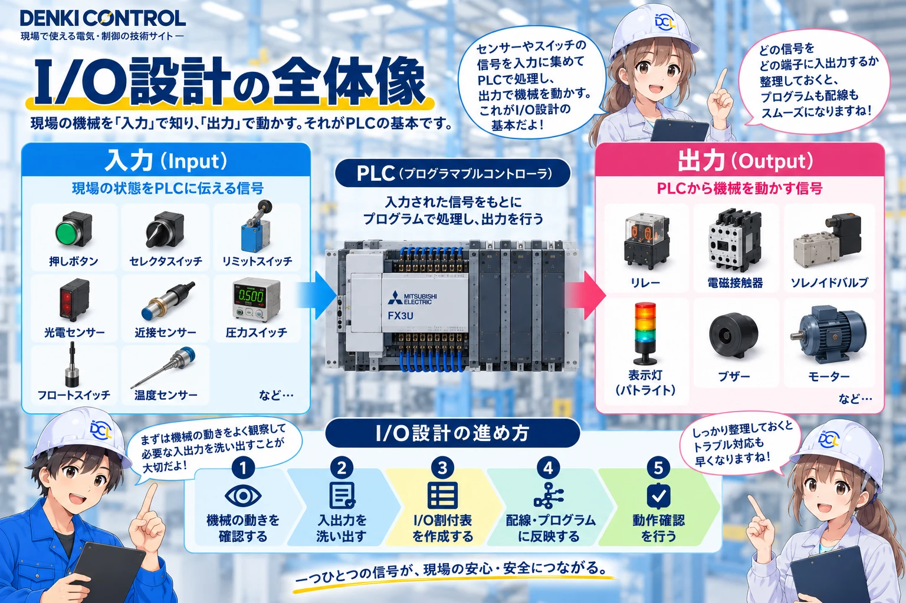
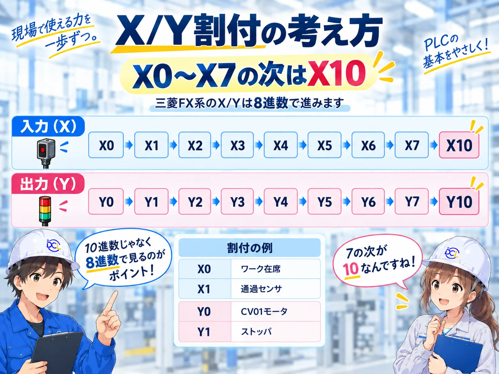
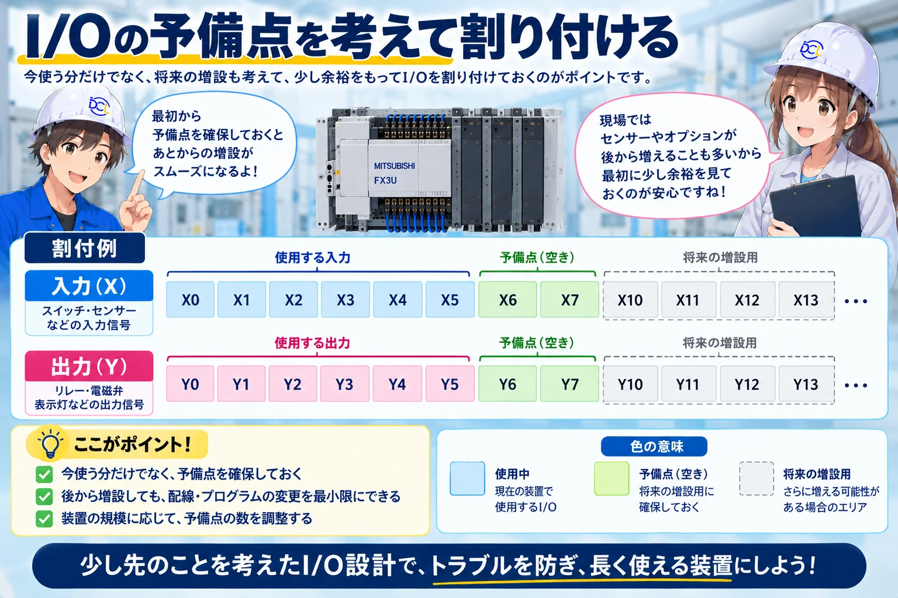

1. I/O設計は「設備の動き」をPLCの言葉に置き換える作業
第1回では設備全体の流れを決めました。第2回では、その流れをPLCから見える信号へ分解します。センサや押しボタンは入力、モータやストッパ用の電磁弁などは出力として整理します。

2. まず入力側を整理する
搬送区間ごとに、ワークがその区間にいるかを見る存在センサと、区間を通過したことを見る通過センサを用意します。CV01〜CV04に各2点、搬送センサだけで合計8点です。
| 仮番地 | 信号 | 役割 |
|---|---|---|
| X0 | CV01 存在 | CV01上のワーク有無 |
| X1 | CV01 通過 | CV01通過判定 |
| X2 | CV02 存在 | CV02上のワーク有無 |
| X3 | CV02 通過 | CV02通過判定 |
| X4 | CV03 存在 | CV03上のワーク有無 |
| X5 | CV03 通過 | CV03通過判定 |
| X6 | CV04 存在 | CV04上のワーク有無 |
| X7 | CV04 通過 | CV04通過判定 |
| X10 | 投入完了 | 作業者の投入完了通知 |
| X11〜X17 | 操作・監視系の予備 | 運転モード、リセット、監視信号などを仕様確定後に配置 |
通過センサは「OFFだった」だけでは完了にしない
このプロジェクトでは、通過センサが一度ONしたあとにOFFへ戻る変化を見て通過完了とします。初めからOFFだった状態を通過完了と誤判定しないためです。
安全関連の信号をPLCへ取り込む場合も、ここでは状態監視として扱います。安全機能そのものを通常PLCだけで代用する設計にはしません。
3. 次に出力側を整理する
搬送部では、各コンベヤの運転指令と、ワークを区切る入口側・出口側ストッパ、投入可表示をまとめます。
| 仮番地 | 出力 | 役割 |
|---|---|---|
| Y0〜Y3 | CV01〜CV04 運転 | 4区間を独立して搬送 |
| Y4〜Y7 | CV01〜CV04 入口側ストッパ | 各区間へのワーク流入を制御 |
| Y10〜Y13 | CV01〜CV04 出口側ストッパ | 次工程への流出を制御 |
| Y14 | 投入可表示 | 作業者へ投入可能状態を表示 |
| Y15〜Y17 | 予備 | 表示や補助機器の追加用 |
加工エリアの細かな出力は第4回で確定
加工ステーションの具体的な駆動機器は、加工工程の動作を整理してから追加します。未確定の機器をここで作り込まず、確定した信号だけを先に割り付けます。
4. X/Y割付は「まとまり」と8進数を意識する
今回のPLC構成はFX3U-80MT/DS + FX2N-16EXを前提にし、入力56点・出力40点の範囲で設計します。番地は、あとでラダーを読む人が追いやすいように、設備のまとまりごとに並べます。
FX3UのX/Y番地は8進数
FX3U系の入出力番号は8進数で、X0〜X7の次はX10です。X8・X9は使いません。Yも同じ考え方でY0〜Y7、Y10〜Y17と進みます。

| 番地ブロック | 今回の使い方 | 狙い |
|---|---|---|
| X0〜X7 | CV01〜CV04 存在・通過 | 搬送センサを連続番地にまとめる |
| X10〜X17 | 投入・操作・監視系 | 操作信号を別グループへ分ける |
| Y0〜Y7 | モータ＋入口ストッパ | 搬送駆動を先頭側へまとめる |
| Y10〜Y17 | 出口ストッパ＋表示＋予備 | 空圧・表示系をひとまとめにする |
メーカー公式資料で確認
三菱電機「FX3Uシリーズ ユーザーズマニュアル［ハードウェア編］」（Ver.AA / JY997D16101-AA / 2024年6月）の入出力番号割付では、X/Yが8進数で割り付けられることが示されています。三菱電機公式・日本語マニュアルを見る
ここで示した番地は搬送部を理解しやすくするための仮割付です。加工部のI/Oが揃った段階で、設備全体の最終I/O表として確定します。
5. 予備点を残しておく
I/Oをぎりぎりまで詰めると、後からセンサや表示灯を1点追加しただけで割付全体を崩すことがあります。そこで、搬送・操作・加工などのまとまりごとに少し空きを残します。

「使っていない点」も設計の一部
予備点は無駄ではありません。変更しやすさ、保守しやすさ、図面とプログラムの読みやすさを守るための余白です。
予備点を残す場合は、図面やI/O表にも「予備」と明記します。何も書かれていない空き番地より、意図して空けていることが分かる方が後工程で迷いません。
6. 第2回のまとめ
設備仕様からI/Oを起こすときは、番地から考えるのではなく、まず設備側の信号を洗い出します。その後に入力・出力へ分け、機能ごとにまとまりを持たせてX/Yへ配置します。
| 設計ステップ | 今回の結果 |
|---|---|
| 設備仕様を確認 | CV01〜CV04と加工エリアの役割を再確認 |
| 入力を整理 | X0〜X10を中心に搬送・投入信号を仮割付 |
| 出力を整理 | Y0〜Y14へモータ・ストッパ・表示を仮割付 |
| 番地ルール | FX3UのX/Yは8進数であることを確認 |
| 予備 | 操作系・表示系の追加用に空きを残す |
この設備を、設計の順番でシリーズ化する
今読んでいる位置と、次に進む記事がすぐ分かるようにシリーズ全体を並べています。
- 第1回設備仕様と全体構想完了
- 第2回PLC・I/O構成を決める今ここ
- 第3回CV01〜CV04の搬送制御を考える次ここ
- 第4回加工ステーションのシーケンスを作る
- 第5回手動運転・異常処理・復旧を設計する
- 第6回GOT画面と保守・生産情報を作る
- 最終GX Works2へ実装してシミュレーションする
次回｜搬送制御を組み立てる
第3回では、今回整理したI/Oを使って、CV01→CV02、CV02→CV03、CV03→CV04の搬送条件と、搬送完了・タイムアウト・隣接区間インターロックを組み立てます。
第3回で使う材料は揃った
「どのセンサを見て、どの出力を動かすか」が決まったので、次は内部リレーやステップへ入る前に、1区間ずつ搬送条件を文章で固定していきます。

既設設備のラダー変更・動作変更は、プロジェクトデータを確認してオンラインで対応します。
会員登録不要｜データ確認後にお見積りこの記事は役に立ちましたか？
今後の記事づくりの参考にします。どちらかを選ぶだけで回答できます。
回答は匿名で集計し、個人情報の入力はありません。